Aplicativos
Para clientes, equipes e operações em campo.
Software sob medida para empresas.
APRESENTAÇÃO INSTITUCIONALEntendemos como a operação funciona e transformamos seus
processos em tecnologia.
Produtos digitais personalizados para diferentes operações e públicos.
Para clientes, equipes e operações em campo.
Processos, informações e indicadores em uma
plataforma.
Soluções acessíveis de qualquer lugar e
preparadas para crescer.
Conexões entre sistemas que eliminam tarefas
manuais.
Fluxos e telas navegáveis ajudam a validar o produto antes do desenvolvimento.
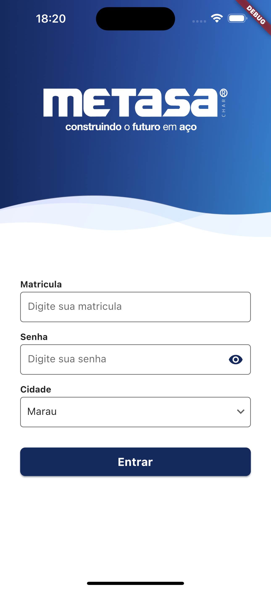
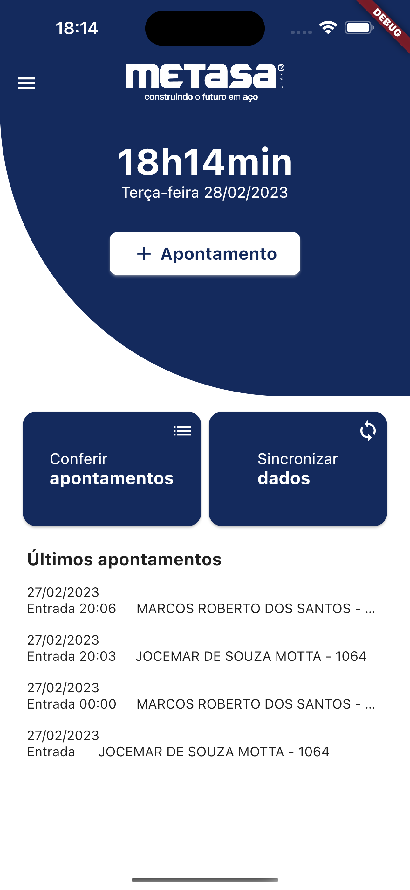
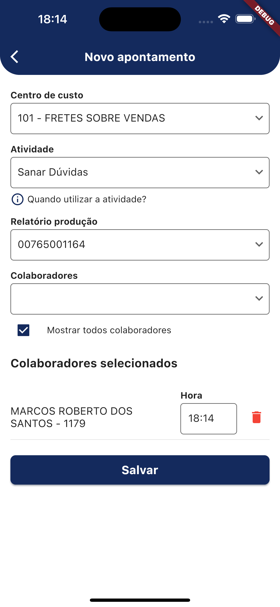
Exemplo visual com telas reais do projeto Metasa
O Figma ajuda a visualizar o produto e alinhar decisões antes do desenvolvimento.
Visão das principais telas
durante a etapa de
prototipação.
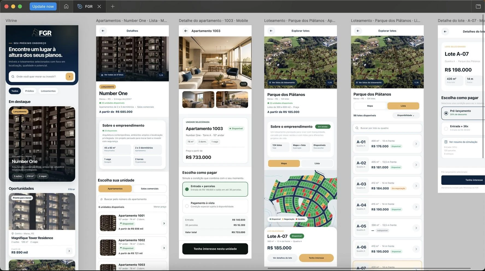
Tecnologia desenvolvida para diferentes mercados, operações e desafios.
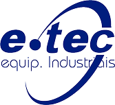
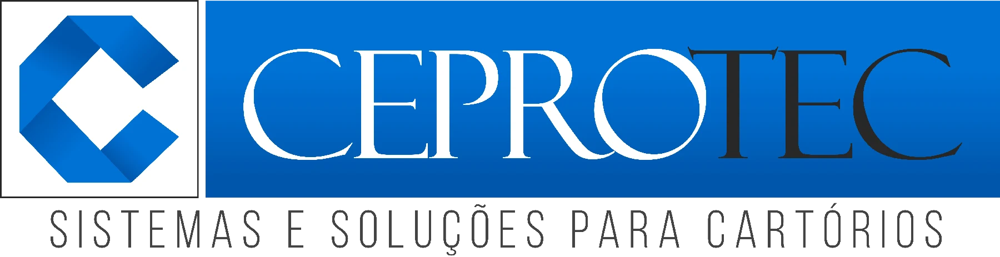
Soluções desenvolvidas para diferentes operações, necessidades e mercados.
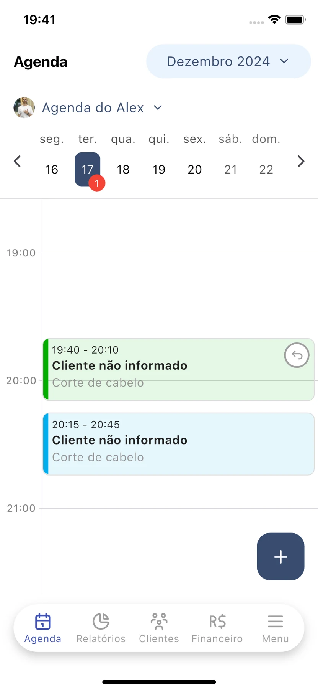
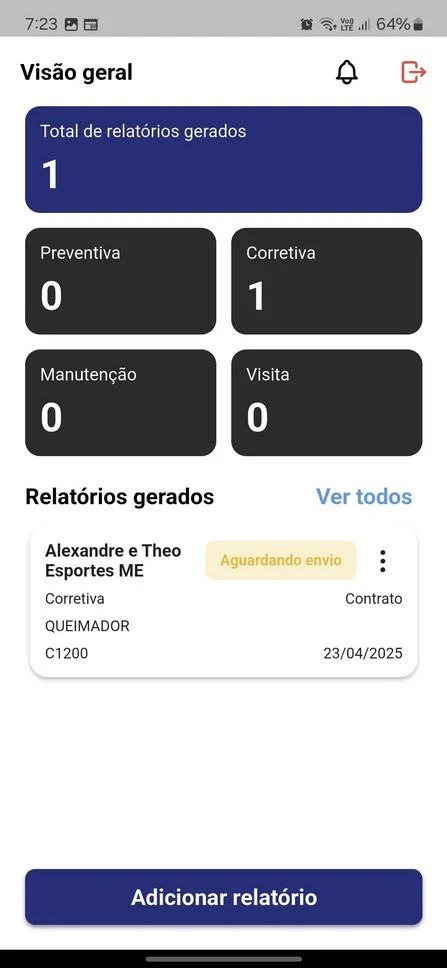
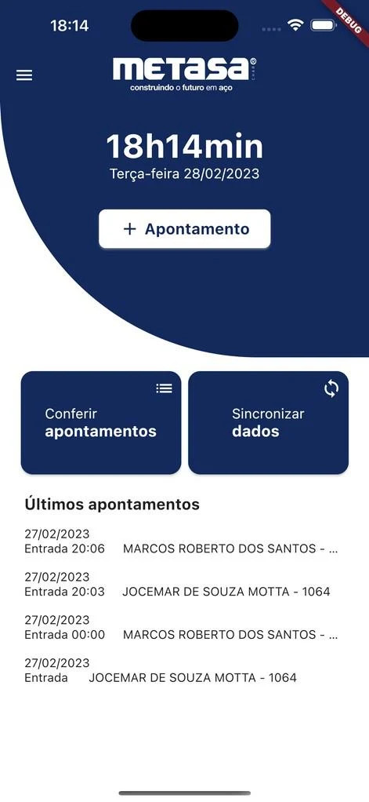
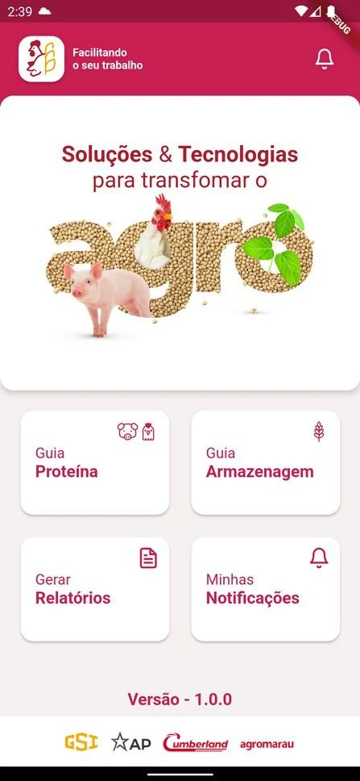
Interfaces web desenvolvidas para rotinas, equipes e contextos diferentes.
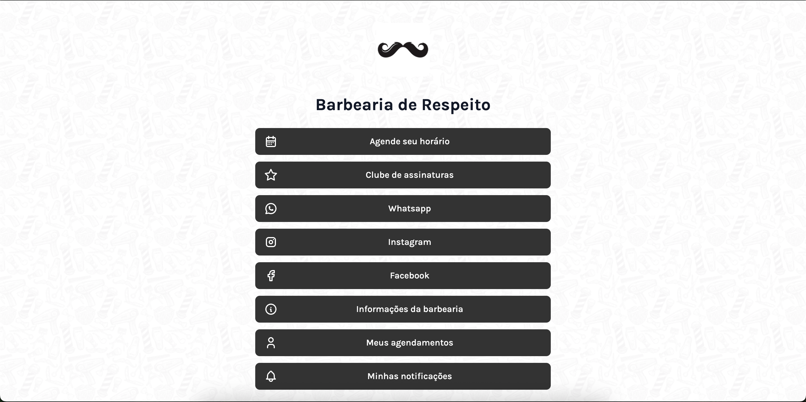
Agendamentos e relacionamento com clientes
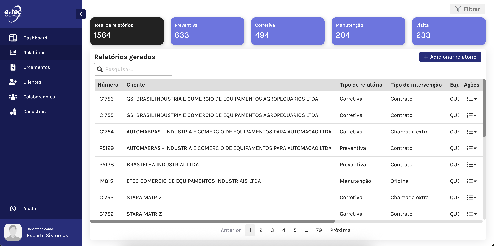
Relatórios e gestão de atendimentos técnicos
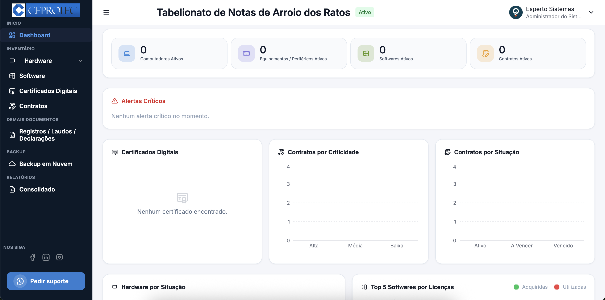
Inventário, documentos e controle de contratos
A solução ganha forma antes de entrar em desenvolvimento.
Rotina, problema e
objetivo
Fluxos e telas
navegáveis
Software baseado no
protótipo
Testes durante a
evolução
Publicação e
acompanhamento
O sistema acompanha a rotina da empresa e
suas regras.
O processo orienta as decisões técnicas do
projeto.
A equipe visualiza e valida a solução antes do
desenvolvimento.
A base pode crescer junto com a operação e
suas prioridades.
Frases que indicam um processo pedindo uma solução própria.
“A gente controla tudo em planilhas.”
“As informações ficam perdidas no
WhatsApp.”
“O time repete a mesma tarefa todos os
dias.”
“Cada área usa um sistema
diferente.”
Quando a operação precisa de uma solução própria.